Introduction to Plotting and Vectorization
This lab will provide an introduction to two dimensional plots. At the end, you should feel comfortable plotting functions of the form f(x). You should find this useful not only for visualizing the solutions of ODEs, but also for plotting general data that might appear in other courses and work.
In the process we will also introduce the concept of vectorization, which is helpful for writing efficient and "clean" code. Vectorization is a concept found not only in MATLAB but also C/C++, Fortran, and other languages.
Opening the m-file lab1.m in the MATLAB editor, step through each part using cell mode to see the results. Compare the output with the PDF, which was generated from this m-file.
There are twelve (12) exercises in this lab that will be graded. Write your solutions in the template, including appropriate descriptions in each step. Save the .m file as lab1_<UTORid>.m and submit it online on Quercus. Also, submit a PDF of the output by generating html (by going to 'File', 'Publish') and then saving to a PDF called lab1_<UTORid>.pdf. Substitute your UTORid for UTORid.
Contents
- Student Information
- Creating Vectors Explicitly
- Exercise 1
- Plotting a Vector
- Plotting Vector x against Vector y
- Exercise 2
- Creating Vectors with For Loops
- Plotting y = x^2
- Plotting y = sin(2 * pi * x)
- Exercise 3
- Plotting Two Data Sets at Once
- Annotating a Figure
- Using Help Effectively
- Vectorization - An Elegant Alternative to Loops
- Speed Comparison
- Exercise 4
- Further Avoiding Loops with linspace
- Exercise 5
- More Plotting Examples - Line Style
- More Plotting Examples - Line Color
- More Plotting Examples - Markers
- Inline functions of one variable
- Exercise 6
- Inline functions of two variables
- Exercise 7
- Numerically solving an implicit equation
- Exercise 8
- Plotting the solution
- Exercise 9
- Exercise 10
- Install iode
- Exercise 11
- Exercise 12
- Exercise 13 (NOT TO BE HANDED IN)
- Exercise 14 (NOT TO BE HANDED IN)
Student Information
Student Name: Regis Zhao
Student Number: 1007070660
Creating Vectors Explicitly
MATLAB plots vectors (also known as arrays) of data points. The first way to create vectors is to give MATLAB a list of values of the form:
x = [value1, value2, value3, ..., valueN];
We can then see the values in the array x by entering x without a semilcolon or with the command disp(x), with or without the semicolon.
Individual entries of the vector can be accessed with the command x(i), where i is between 1 and the length of the array. If i is not in this range an error is thrown.
Examine the following commands and their output.
x = [.5, 1.0, 2.3, 4.0, 4.333, 5.]; %These are arbitrary values
x
disp(x)
disp(x);
x(1)
x(2)
x =
0.5000 1.0000 2.3000 4.0000 4.3330 5.0000
0.5000 1.0000 2.3000 4.0000 4.3330 5.0000
0.5000 1.0000 2.3000 4.0000 4.3330 5.0000
ans =
0.5000
ans =
1
Exercise 1
Objective: Observe a MATLAB error when you try to access an invalid index.
Details: Try to access elements of the vector x, created in the previous step at the command prompt >>. Try values of i outside the valid range. Try negative values, zero, and large positive values. Copy down the error message in each case, and report this in your submitted work as:
Error for negative index:
Error for zero index:
Error for positive index outside of the bounds:
Only include the error message as a comment (with the percent signs), DO NOT INCLUDE THE CODE IN YOUR SUBMISSION.
% Error for negative index: Array indices must be positive integers or logical values. % % Error for zero index: Array indices must be positive integers or logical values. % % Error for positive index outside of the bounds: Index exceeds the number of array elements (6).
Plotting a Vector
Given a list (one dimensional array) of values we can plot them with the command plot(x), with or without a semicolon. This will plot the points in the data set (i, x(i)).
plot(x)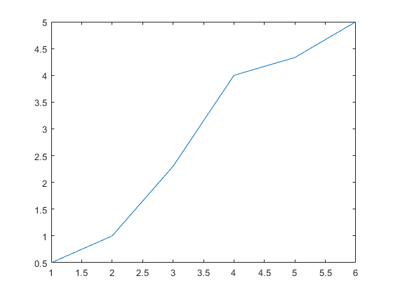
Plotting Vector x against Vector y
To plot functions, we need two vectors: a set of x points and a corresponding set of y points. We now create a vector y and plot x against y with the command plot(x,y).
If the two vectors are not the same size, MATLAB will throw an error.
y = [3.7, -3.4, 1.02, 2.2, .04, 1.0]; %These are arbitrary values
plot(x,y)
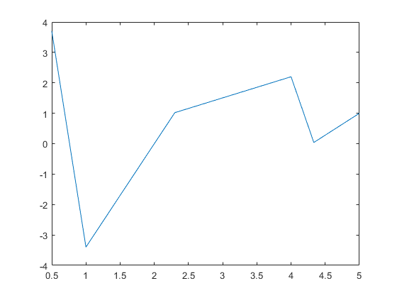 Exercise 2
Objective: Create two vectors and plot one against the other.
Details: Explicitly create the vectors
x = [-5, -3, -1, 0, 2, 4, 6]
and
y = [-25, -9, -1, 0, 4, 16, 36]
And plot x against y. Your submission should show both the creation of the vectors and the figure, as in the example.
x = [-5, -3, -1, 0, 2, 4, 6] y = [-25, -9, -1, 0, 4, 16, 36] plot(x,y)
x =
-5 -3 -1 0 2 4 6
y =
-25 -9 -1 0 4 16 36
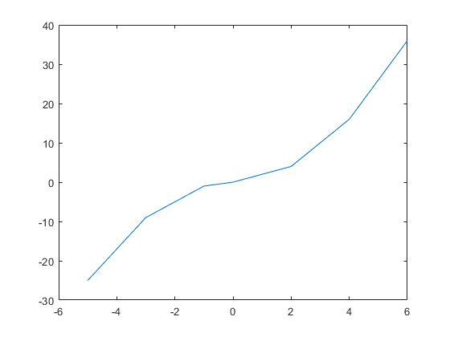 Creating Vectors with For Loops
Entering the values by hand is tedious and error prone. We can use MATLAB's programming features to create them. Suppose we want to create a vector of N points between 0 and 1, equally spaced and inclusive. This would be useful if we wanted to evaluate a function, f(x), at all of these values.
The distance between the points will be h = (1 - 0)/(N-1), so that:
0 = x(1) = 0 * h < x(2) = 1 * h < ... < x(j) = (j-1) * h < ... < x(N) = (N-1) * j = 1
NOTE: if we with to do this between two arbitrary points, a < b, instead of 0 and 1, the values would be: h = (b - a)/(N-1) and a = x(1) = a + 0 * h < x(2) = a+ 1 * h < ... < x(j) = a +(j-1) * h < ...< x(N) = b
We assign a value of N, compute h, preallocate a vector x, and then loop through the vector.
By 'preallocate' we mean 'set aside an array of the appropriate size in memory for future use'. Preallocation can be done with the command x = zeros(N,1);, which makes an array of length N in which all the entries are zero. Other options are possible, too.
N = 11; %Alter this value to see different results h = (1-0)/(N-1); x = zeros(N,1); %This creates a column vector. %zeros(1,N) would create a row vector. for j = 1:N x(j) = (j-1) * h; end disp(x);
0
0.1000
0.2000
0.3000
0.4000
0.5000
0.6000
0.7000
0.8000
0.9000
1.0000
Plotting y = x^2
As a first example of plotting a function, we plot y = x^2. Using the array x created in the last step, we populate a vector y such that y(i) = x(i)^2 and plot it.
y = zeros(N,1); %Preallocate the array for j = 1:N y(j) = x(j)^2; end disp(y); plot(x,y)
0
0.0100
0.0400
0.0900
0.1600
0.2500
0.3600
0.4900
0.6400
0.8100
1.0000
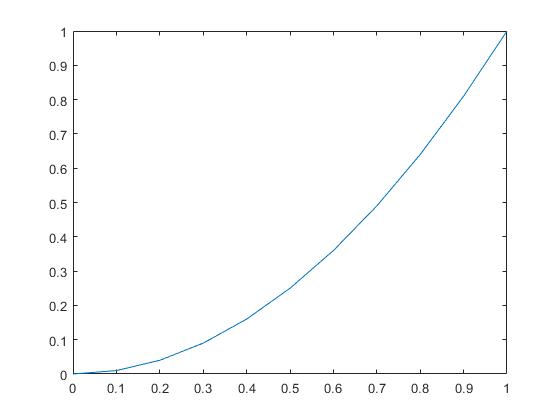 Plotting y = sin(2 * pi * x)
MATLAB has a number of built in functions including the trigonometric functions (sin, cos, arccos,...), the exponential functions (exp), the natural logarithm function (log), hyperbolic functions (sinh, cosh), and others. The constant pi is also defined. For a full list of built in functions type help elfun at the MATLAB command line.
We create the vector z with z(j) = sin(2*pi*x(j)), using the same array as from the previous steps.
z = zeros(N,1); %Preallocate the array for j = 1:N z(j) = sin(2 * pi * x(j)); end plot(x,z)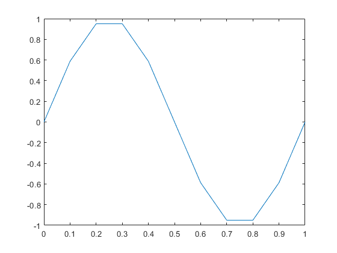
Exercise 3
Objective: Plot x.x
Details: Using a for loop, create a vector x of 101 equally spaced points between -3 and 7, inclusive. Then create a vector y, such that y(i) = abs(x(i))*x(i) using a for loop. Plot the results.
Your submission should include the code, as in the example, and appropriate comments.
N = 101; %number of points h = (7 + 3)/(N - 1); %distance between each point x = zeros(N, 1); %preallocating the x and y arrays y = zeros(N, 1); for i = 1:N x(i) = -3 + ((i-1) * h); %setting x value y(i) = abs(x(i)) * x(i); %setting corresponding y value based on x value end plot(x,y) %plotting results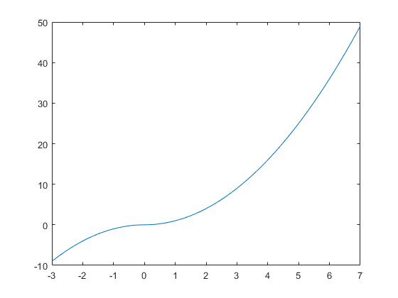
Plotting Two Data Sets at Once
We can also plot the preceding two examples on the same figure with the command plot(x, y, x, z). MATLAB will automatically put a different color on each line.
h=0.1 %redefine the variables x, y, z x=0:h:1; %because they might have been y=x.^2; %changed in exercise 3 z=sin(2*pi.*x); % plot(x,y,x,z)
h =
0.1000
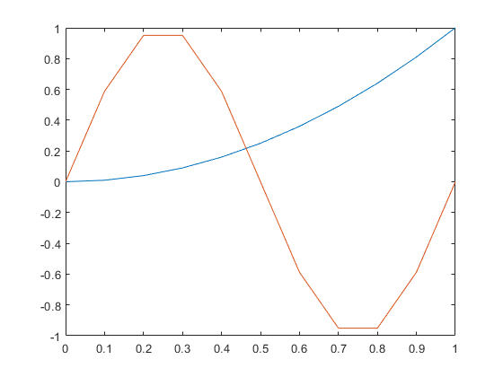 Annotating a Figure
It is easy to add a title, axis labels, and a legend to the preceding figure.
xlabel('x'); ylabel('f(x)'); title('Example plot of two functions plotted on the same figure'); legend('x^2', 'sin(2*pi*x)');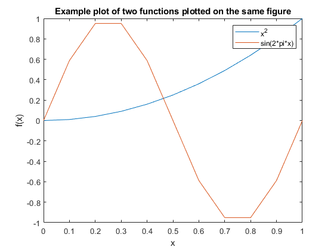
Using Help Effectively
You can obtain help on any routine at the command line by typing help commandname. As you may have noticed in the preceding figure, the legend was not placed in a convenient position. We will now use help to find out how to move the legend to the lower left corner, where it will be less obtrusive.
If you type help legend in the command window at the >> prompt, you'll see a section:
LEGEND(...,'Location',LOC) adds a legend in the specified location, LOC, with respect to the axes. LOC may be either a 1x4 position vector or one of the following strings:
'North' inside plot box near top
'South' inside bottom
'East' inside right
'West' inside left
'NorthEast' inside top right (default)
'NorthWest inside top left
'SouthEast' inside bottom right
'SouthWest' inside bottom leftThus, if we call legend again, with the option 'Location', 'SouthWest', it will move the legend to where we want.
%NOTE: The labels are entered again. legend('x^2', 'sin(2*pi*x)','Location','SouthWest');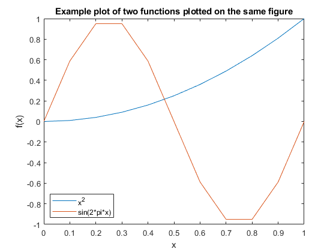
Vectorization - An Elegant Alternative to Loops
In the previous examples, we used for loops to fill our arrays with the values we wanted. This is very similar to what would be done in C/C++, Java, Fortran, and other languages.
MATLAB provides a faster way to perform these looped operations, using vectorization, which proccesses the entire vector as a single object. For example, given a vector x, we can get the sine of the values in x with the command sin(x), which outputs another vector. This works with all built in MATLAB functions.
Multiplication, division, and exponentiation are handled differently. Instead of using *, /, and ^, we must use .*, ./, and .^ to indicate that we want the operation to be performed on each element. The reason for this change in the symbols is that MATLAB uses the symbols without the period for matrix multiplication, exponentiation, and other actions.
Vectorization yields more concise and less error prone code:
y = x.^2; %Alternatively, y = x .* x; z = sin(2 * pi * x); %NOTE: Multiplcation by the scalar 2*pi, does not % require the .* operator. Why is that? plot(x,y,x,z) %Verify that these are the same results xlabel('x'); ylabel('f(x)'); title('Example plot of two functions computed by vectorizaiton'); legend('x^2', 'sin(2*pi*x)','Location','SouthWest');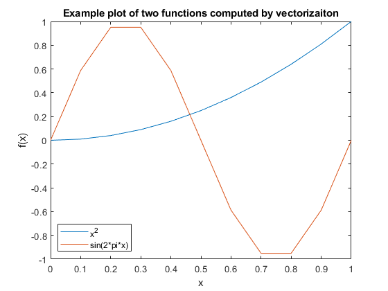
Speed Comparison
Historically, it was desirable both for clarity and speed to use vecotrized operations in place of loops everywhere possible in MATLAB. Recent versions of MATLAB have reduced the speed advantage through the introduction of a Just in Time (JIT) compiler, parallel for loops, and other tools.
However, we can still demonstrate the speed advantage, and the benefit to clarity is already evident.
Timing is done with the tic, toc commands, which enclose the region we want to benchmark. The first output is the time for the construction done by looping, the second output is the time for construction done with vectorization.
clear y; %Clear the y array tic; %Begin timing the construciton and filling of the array N = 11; y = zeros(N,1); for j = 1:N y(j) = x(j)^2; end toc; clear y; %Clear the y array tic; y = x.^2; toc;
Elapsed time is 0.000555 seconds. Elapsed time is 0.000130 seconds.
Exercise 4
Objective: Compare the speedup from vectorization for a larger vector.
Details: Create a vector x of 5000001 equally space points between -2 and 3, inclusive, using a for loop. Then time the construction of vector y, whose values are arctan of x, by a for loop and by vectorization. Be sure to clear y between the two runs. (Hint: use the help file to find the command for arctan!)
Your submission should include the code, as in the example, with appropriate comments.
N = 5000001; h = (3 + 2)/(N - 1); x = zeros(N, 1); %preallocating the x array for i = 1:N x(i) = -2 + ((i-1)*h); %setting x values end tic; %begin timing y = zeros(N, 1); for j = 1:N y(j) = atan(x(j)); %calculating y values end toc; %end timing clear y; %clear y array tic; %begin timing y = atan(x); %creating y through vectorization toc; %end timing
Elapsed time is 0.071921 seconds. Elapsed time is 0.012478 seconds.
Further Avoiding Loops with linspace
In the preceding examples, we will focus on the vector x, which was constructed with a for loop. MATLAB includes a routine for creating a vector of a given number, N, of equally spaced points between two values, a and b:
x = linspace(a, b, N);
No preallocation is neccessary. The argument N is optional. If it is omitted MATLAB uses 100 points by default.
We will now use linspace to plot the functions y = x - x^3 and y = exp(x) in the range [-2, 4] with 200 points.
clear all; %Clears all variables x = linspace(-2,4, 200); %Create the array y = x - x.^3; z = exp(x); plot(x,y,x,z) %Verify that these are the same results xlabel('x'); ylabel('f(x)'); title('Example plot of two functions generated by vectorizaiton'); legend('x-x^3', 'exp(x)','Location','SouthWest');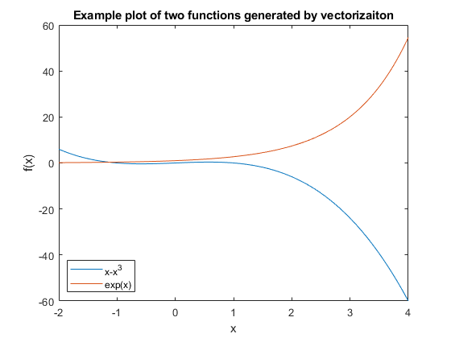
Exercise 5
Objective: Solve an ODE and plot three particular solutions.
Details: Manually find the general solution of the ODE:
dy/dt + (2*t)*y = 1/exp(t^2)
and the particular solutions for initial conditions y(1) = -1, y(1) = 0, and y(1) = 1. Plot these three particular solutions on the same axes lettting the independent variable range from 1 to 5.
Once you have the three particular solutions you will need to:
1. Create a vector for the independent variable, t. Use linspace with a reasonable number of points (100 is fine). 2. Create vectors for the three solutions. Use vectorized operations. 3. Plot three solutions on the same axes, annotating the figure appropriately.
Your submission should include, in the description section, the general solution of the ODE and the three particular solutions. It should also have the appropriately commented code.
% The general solution of the ODE is: |y(t) = (t + C) / exp(t^2)| t = linspace(1, 5); %creating vector for independent variable t y1 = (t - exp(1) - 1) ./ exp(t.^2); %creating vectors for the three solutions y2 = (t - 1) ./ exp(t.^2); y3 = (t + exp(1) - 1) ./ exp(t.^2); plot(t, y1, t, y2, t, y3) %plotting the solutions xlabel('t'); ylabel('y(t)'); title('Particular solutions to dy/dt + (2*t)*y = 1/exp(t^2)'); legend('y(1) = -1', 'y(1) = 0', 'y(1) = 1', 'Location','NorthEast');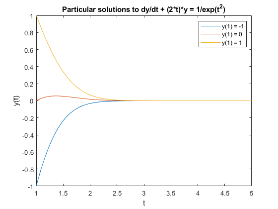
More Plotting Examples - Line Style
There are many plotting options available, including color, line style, and marker style. Some options can be found from the help plot command. This is done by incuding a command after each line.
In the first we example we will vary the line style.
x = linspace(-5,5); %Plot three functions with different line styles. NOTE: the %function can be put directly in the plot argument. plot(x, sin(x),'--', x, cos(x),'-.', x, exp(-x.^2),':'); legend('sin', 'cos', 'exp(-x^2)');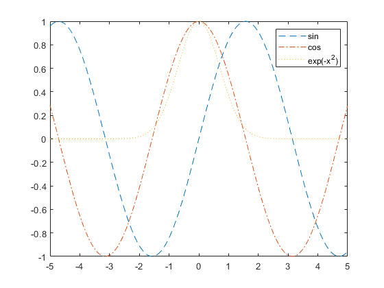
More Plotting Examples - Line Color
We can also control the color, mixing it with line style.
%Plot two functions, first in green and then in red. x = linspace(-1,1); plot(x, x.^3 .* sin(x), 'g', x, -x .* exp(x), 'r-'); legend('x^3 * sin(x)', '-x * exp(x)');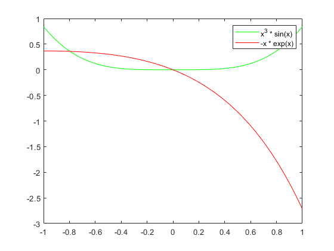
More Plotting Examples - Markers
Markers can be used at the individual points, with and without a line joining the points.
x = linspace(-4,4, 20); plot(x, sin(x), 'x-', x, (x.^2)./(1+x.^2), '.'); legend('sin(x)', 'x^2/(1+x^2)');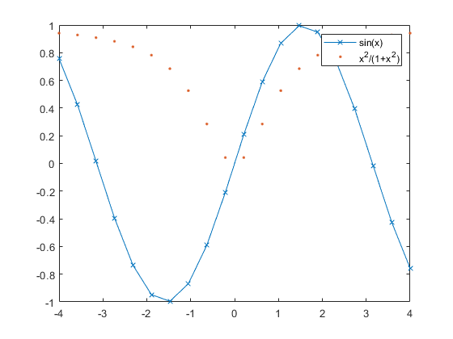
Inline functions of one variable
Suppose we wish to construct the function:
f(x) = x * sin(x)
In a way that MATLAB can understand and manipulate. This will let us compute values of f(x), plot it, and create other functions from it.
This can be accomplished by defining an inline function of one variable, with the command:
function name = @(argument name) mathematical expression;
For this example, the function name is f, the argument name is x, and the mathematical expression is x * sin(x).
Consider the following examples, and take note of:
1. The use of vectorization in the definitions, 2. The different ways that the output can be displayed, 3. The different variable names.
f = @(x) x .* sin(x); x = 1; fprintf(' f(%g) = %g\n', x, f(x)); fprintf(' f(%g) = %g\n', 1, f(1)); disp(f(1)); f(1) x = 2; fprintf(' f(%g) = %g\n', 2, f(2)); fprintf(' f(%g) = %g\n', 2, f(2)); disp(f(2)); f(2) disp(f([1,2])) g = @(t) t.^2 - t +1; g(1) g(2) % Construct an array of 100 grid points from -2 to 2, and plot g(t). t = linspace(-2,2); plot(t, g(t)); % Label axes xlabel('t'); ylabel('g');
f(1) = 0.841471
f(1) = 0.841471
0.8415
ans =
0.8415
f(2) = 1.81859
f(2) = 1.81859
1.8186
ans =
1.8186
0.8415 1.8186
ans =
1
ans =
3
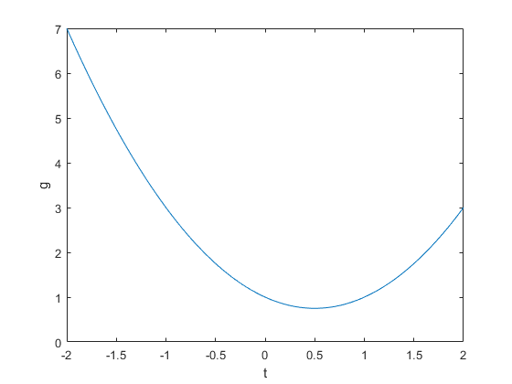 Exercise 6
Objective: Write and use an inline function of one variable.
Details: Define the inline function for
f(x) = (x^3 - abs(x)) * ln(x^2+1)
Use this function to compute f(0), f(1), and f(-1) and plot the function with 100 grid points from -5 to 5. Make sure to use vectorization in your definition, and label your axes.
Your submission should show the definition of the function, and the computation of these values.
f = @(x) (x.^3 - abs(x)) .* log(x.^2+1); %defining the function fprintf('f(%g) = %g\n', 0, f(0)); %computing and displaying values fprintf('f(%g) = %g\n', 1, f(1)); fprintf('f(%g) = %g\n', -1, f(-1)); x = linspace(-5, 5); %creating vector for independent variable x plot(x, f(x)) %plotting the graph xlabel('x'); ylabel('f(x)'); title('Graph of f(x) = (x^3 - abs(x)) * ln(x^2+1)');
f(0) = 0 f(1) = 0 f(-1) = -1.38629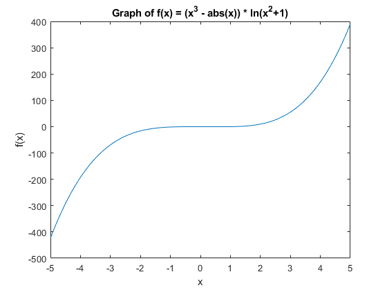
Inline functions of two variables
Suppose we wish to solve the equation
x = y^3 + y
for y as a function of x. If we do this by root finding, then, given a value of x0, we need to find the root of the function
g(y) = f(x0,y) = y^3 + y - x0
We will accomplish this using inline functions.
Inline functions of two variables are defined as:
func = @(x,y) f(x,y);
where func is the name you wish to assign your function, and f(x,y) is the relevant expression.
Some examples of defining and using inline functions of two variables are given below.
f = @(x,y) y.^3 + y - x; x = 0; y = 0; fprintf(' f(x = %g, y = %g) = %g\n', x, y, f(x, y)); x = 0; y = 1; fprintf(' f(x = %g, y = %g) = %g\n', x, y, f(x, y)); disp(f(x,y)) f(0,1) h = @(t,u) t.^2 + sin(u); h(1, pi/2) h(2, 2)
f(x = 0, y = 0) = 0
f(x = 0, y = 1) = 2
2
ans =
2
ans =
2
ans =
4.9093
Exercise 7
Objective: Write and use an inline function of two variables.
Details: Define the inline function for
f(x,y) = y + y^3 - cos x + x^2 - x^4
Note that f(x,y) = c is the implicit solution to
dy/dx = (4x^3 - 2x - sin x)/(1+3y^2).
See Examples 1-3 of section 2.1 in Brannan and Boyce for similar examples.
Use this function to compute f(0, 0), f(pi/2,1), and f(-1,-1). Make sure to use vectorization in your definition.
Your submission should show the definition of the function, and the computation of these values.
f = @(x,y) y + y.^3 - cos(x) + x.^2 - x.^4; %defining the function fprintf('f(x = %g, y = %g) = %g\n', 0, 0, f(0, 0)); %computing and displaying values fprintf('f(x = %g, y = %g) = %g\n', pi/2, 1, f(pi/2, 1)); fprintf('f(x = %g, y = %g) = %g\n', -1, -1, f(-1, -1));
f(x = 0, y = 0) = -1 f(x = 1.5708, y = 1) = -1.62067 f(x = -1, y = -1) = -2.5403
Numerically solving an implicit equation
Given x0, we will now solve the equation
f(x0, y) = y^3 + y - x0 = 0
for y. This will be accomplished using fzero, which employs a more advanced form of Newton's method.
The minimal arguments needed for using fzero are:
fzero(function_handle, guess)
function_handle is an abstract data structure which directs MATLAB towards a function of a single variable that it will try to zero.
We need to tell MATLAB that it is trying to solve for the y argument. This is done by creating an inline function of one variable from the existing function, i.e.
g = @(y) f(x0, y)
And then having fzero try to solve
g(y) = 0
You can either define the new inline function and use it:
g = @(y) f(x0, y); y = fzero(g, guess);
or you can put the inline function argument directly in the function handle argument:
y = fzero(@(y) f(x0,y), guess);
The guess is an initial guess for what we anticipate y to be. Finding a good initial guess may require some experimentation. For this example, the guess may be quite poor, and the algorithm will still converge. For others, more care must be taken.
Note the various ways of constructing the inline function of one variable, and the different guesses.
f = @(x,y) y.^3 + y - x; x0 = 1; guess = 1; g = @(y) f(x0, y); y = fzero(g, guess); fprintf(' y(%g) = %g\n', x0, y); guess = 50; y = fzero(g, guess); fprintf(' y(%g) = %g\n', x0, y); x = 2; g = @(y) f(x, y); y = fzero(g, 2); fprintf(' y(%g) = %g\n', x, y); guess = 2; y = fzero(@(y) f(2, y), guess); fprintf(' y(%g) = %g\n', 2, y);
y(1) = 0.682328 y(1) = 0.682328 y(2) = 1 y(2) = 1
Exercise 8
Objective: Use fzero to solve an equation f(x,y)=0 for y at different values of x.
Details: Consider the function
f(x,y) = y + y^3 - cos x + x^2 - x^4
Define the appropriate inline function and compute the single solution at x = 0 and the two positive solutions at y = 1/2.
You will need to experiment with different guesses to get these three solutions.
Your submission should show the definition of the function, and the computation of these three roots.
f = @(x,y) (y + y.^3 - cos(x) + x.^2 - x.^4); x1 = 0; g = @(y) f(x1,y); guess = 1; y = fzero(g, guess); fprintf('y(%g) = %g\n', x1, y); y1 = 1/2; g = @(x) f(x, y1); guess = 1; x = fzero(g, guess); fprintf('x(%g) = %g\n', y1, x); guess = 0.5; x = fzero(g, guess); fprintf('x(%g) = %g\n', y1, x);
y(0) = 0.682328 x(0.5) = 1.05844 x(0.5) = 0.567406
Plotting the solution
Now we are ready to plot y as a function of x. We will construct an array of x values, solve for y at each value of x, and then plot the results. This will be accomplished with a for loop.
f = @(x,y) y.^3 + y - x; % 50 points equally spaced from -5 to 2, inclusive xvals = linspace(-5, 2, 50); % Preallocate storage space for the solutions yvals = zeros(size(xvals)); % Loop through all the values for j = 1:length(xvals) yvals(j) = fzero(@(y) f(xvals(j), y), 0); end % Plot the results plot(xvals, yvals); xlabel('x'); ylabel('y');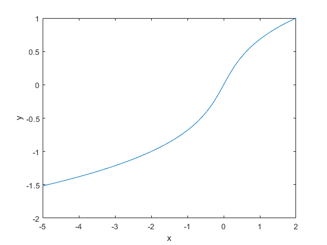
Exercise 9
Objective: Plot a portion of an implicit equation.
Details: Plot the portion of the solution to
f(x,y) = y + y^3 - cos x + x^2 - x^4
passing through the point (0,0) for x from -2 to 2. Use 100 grid points.
You will need to be careful with the initial guess you use in solving the equation.
Your submission should show the definition of the function, the construction of the arrays, the for loop, and the resultant figure.
Label your axes.
f = @(x,y) (y + y.^3 - cos(x) + x.^2 - x.^4); %defining the function xvals = linspace(-2, 2); %creating array of x values yvals = zeros(size(xvals)); %preallocating storage space for solutions for i = 1:length(xvals) %loop through all x values g = @(y) f(xvals(i),y); yvals(i) = fzero(g,0); %solve for y values end plot(xvals, yvals); %plot results xlabel('x'); ylabel('y');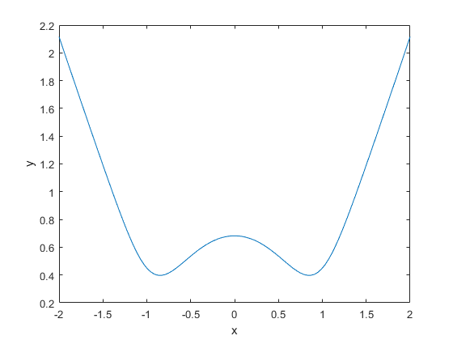
Exercise 10
Objective: Solve a differential equation and plot a portion of it.
Details: Find the general implicit solution of the differential equation
dy/dx = (-cos x + 3x^2) y
Plot the particular solution passing through y(0) = 1 using 100 grid points for x in [-1.5, 1.25].
Be careful on your choice of guess. You will be penalized if MATLAB shows an error.
Your submission should show the general and particular solutions, in implicit form, in the comments, the definition of the appropriate inline functions, arrays, the for loop, and the figure.
Label your axes.
Install iode
Objective: install iode
Details: visit https://faculty.math.illinois.edu/iode/ and follow the instructions there to download and install iode.
Exercise 11
Objective: use iode a plot the direction field of a differential equation
Details: After starting iode, click the "direction fields" buttom from the main menu. The default is the direction field for
dy/dx = sin(y-x)
Click any point in the x-y plane to see a (numerically computed) solution to the differential equation passing through that point.
Starting from the "Equation" menu, plot the direction field of
dy/dx = xy^2
Describe, in words, the behaviour of the solutions. What happens as x approaches infinity? Explain why solutions are symmetric about the y-axis, i.e. y(x)=y(-x) for any solution.
% Solutions do not cross the line |y = 0|. Solutions that lie above % |y = 0| stray away from |y = 0| as x approaches +/- infinity. Conversely, % solutions that lie below |y = 0| approach |y = 0| as x approaches +/- % infinity. % The general solution to the ODE is |y(x) = -2 / (x^2 + C)|. This is an % even function. Therefore, solutions are symmetric about the y-axis.
Exercise 12
Objective: study the long-run behaviour of a differential equation from its direction field
Details: Using iode, plot the direction field of
dy/dx = y^4 - y^3 - 3*y^2 + y + 2
By clicking on various initial conditions y(0) = y_0 (iode plots the solution), determine the long-run behaviour of solutions as a function of y_0. In other words, list the constant solutions that are approached as x goes to infinity and how y_0 determines which constant solution is approached.
If your numerically computed solutions ever appear to cross then change the solution method from Euler to the, much better, Runge-Kutta method. Think about why solutions are not permitted to cross. If they do then this indicates a problem with the numerical solver.
% Depending on the value of y_0, the solutions may approach y = 1, -1 or % infinity as x approaches infinity. By examining the direction field, we % can see that this ODE has 3 equilibria: |y = -1| is semistable, |y = 1| % is stable, and |y = 2| is unstable. Therefore, any value of y_0 between % -1 and 2 will run away from |y = -1| or |y = 2| and will approach |y = % 1|. Any value of y_0 less than -1 will approach |y = -1|. Any value of % y_0 greater than 2 will not approach a constant solution.
Exercise 13 (NOT TO BE HANDED IN)
Objective: Solve a differential equation and plot the largest interval of existence for this solution.
Details: Find the particular implicit solution of the differential equation
dy/dx = -x/y, y(0) = -2
Determine the largest interval of validity and plot the solution with 50 grid points in this interval.
In the comments before your code, explain why fzero has an error.
Your submission should show the particular solution, in implicit form, in the comments, the definition of the appropriate inline functions, arrays, loops, and the figure.
Label your axes.
Exercise 14 (NOT TO BE HANDED IN)
Objective: Solve a differential equation and plot the solution on the specified interval
Details: Find the particular implicit solution of the differential equation
du/dt = -(u^4 - 1), u(0) = .1
and plot it for t from 0 to 1.
Determine a good starting guess that works throughout the interval and plot the solution with 50 grid points in this interval.
Your submission should show the particular solution, in implicit form, in the comments, the definition of the appropriate inline functions, arrays, loops, and the figure.
Label your axes.